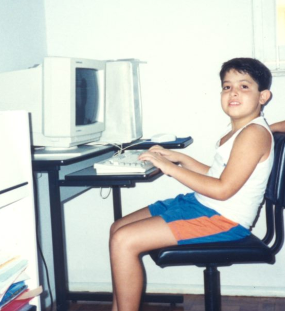

Um pouco sobre mim
Tenho 36 anos, sou do Rio de Janeiro mas já morei em São Paulo e em Brasília! Minha família é espalhada pelo Brasil todo, então eu cresci viajando pelas cidades brasileiras.
Alguns dos meus hobbies:
- Cinema (já fiz até curso de crítica de cinema!)
- Jogos (digitais e de tabuleiro!)
- Ler (não viajo sem meu Kindle)
- Cozinhar (é uma terapia)
Minha carreira profissional e acadêmica
Eu estudei no Instituto Militar de Engenharia, e me formei em 2010. Na faculdade optei por fazer o curso de Engenharia Civil, e trabalhei bastante tempo nessa área, mas sempre gostei de computadores e tecnologia. Meu primeiro computador foi um Intel 386, e sempre gostei de configurar a máquina e entender como ele funcionava!
Meu primeiro estágio foi em uma empresa de Engenharia Civil, mas foi como programador. A primeira linguagem que eu comecei a trabalhar foi com Visual Basic, mas já trabalhei com VBA, Python, C e algumas outras linguagens.
Em 2015 eu tomei uma decisão de fazer uma migração de carreira, e em 2016 eu comecei o meu mestrado em Engenharia de Sistemas e Computação na COPPE/UFRJ, na trilha de Engenharia de Software Experimental. Daí eu já entrei no mercado de tecnologia, e passei por várias funções: analista de qualidade, Product Owner, dev, Tech Lead e Gerente de Engenharia.
Em paralelo, desde 2016 eu sou professor universitário, começando com aulas na área de Engenharia Civil e, nos últimos 5 anos, com disciplinas na área de computação, como Programação Estruturada, Programação Orientada a Objetos, Estruturas de Dados e Business Intelligence.
Estou no Inteli desde maio de 2024, atuando na área de desenvolvimento de novos produtos, olhando para produtos acadêmicos, como pós-graduações e o curso de ADM Tech!